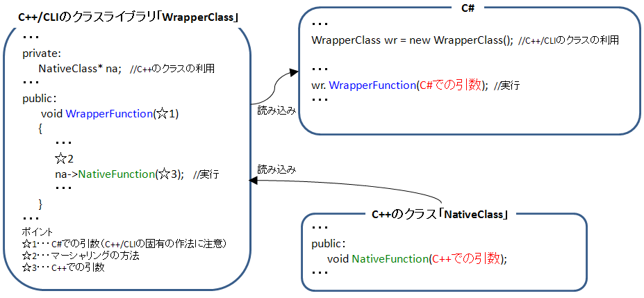
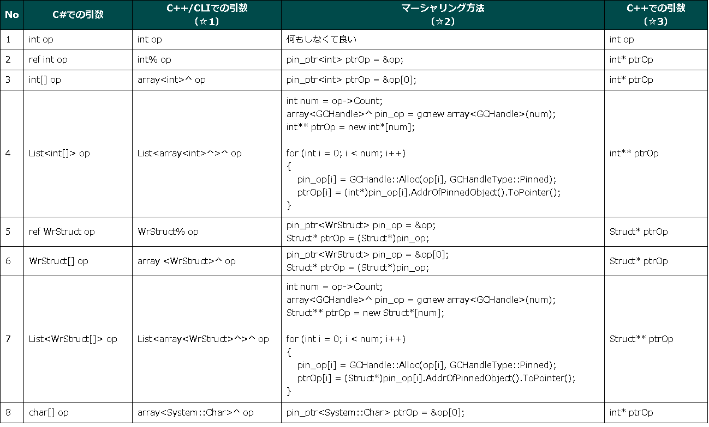
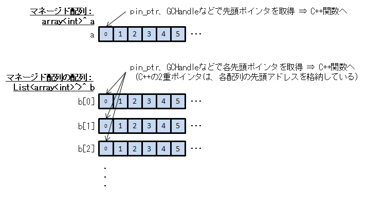

において、C#から、C++の標準関数、自作関数、自作クラスを利用する例を説明しました。
以下の模式図を見てください。C++のクラス「NativeClass」の「NativeFunction」メソッドをC#で利用する例の模式図です。

ポイントになるのは、
「様々な引数を、どのようにC#とC++間で橋渡し（マーシャリング）をするのか？」
です。
以下のような引数の橋渡し方法を考えてみます。
なるべくポインタを駆使することを心がけて、橋渡し方法を考えました。当然、これ以外にもいろいろ方法があると思います。

pin_ptrの場合、
pin_op = nullptr;
GCHandleの場合、
pin_op.Free();
例：
C++の構造体：
#pragma pack(4)
typedef struct tagStruct
{
int a;
int b;
}Struct;
#pragma pack()
C++/CLIの構造体：
[StructLayoutAttribute(LayoutKind::Sequential, Pack = 4)]
public value struct WrStruct
{
int a;
int b;
};
C#の構造体：
[StructLayout(LayoutKind.Sequential, Pack = 4)]
unsafe public struct WrStruct
{
public int a;
public int b;
};